-
- Basic info. 基本信息
- 个人信息: 韩苏泽 / 男 / 27岁
- 教育经历: 本科 / 内蒙古工业大学 / 2012年
- 英语水平: CET-4
- 常用ID: xiaohan80s
- Blog: www.xiaohan80s.com
- GitHub: www.github.com/hansuze
-
- Experience. 工作经验
-
2012-09 至 2014 - 03
东华软件医疗事业部实施
参加过武汉第三医院和郑州第五附院的上线和准备工作
-
2014-03 至 2016 - 07
东华软件医疗事业部药房药库组开发
主要负责医院药房药库产品调研、升级和上线工作
-
- Product. 个人作品展示
-
个人博客 博客地址
主要记录自己在学习 JavasScript设计模式和 CSS使用技巧 方面的读书笔记
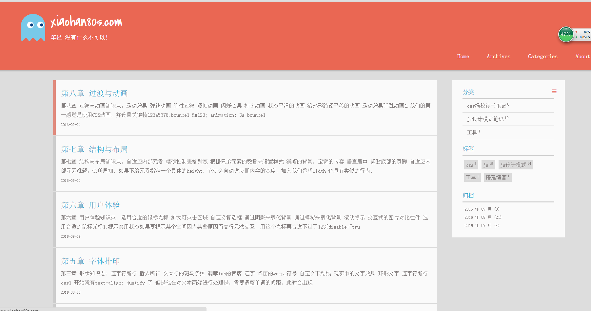 -
date-picker 源代码 Demo
基于jQuery的日历插件
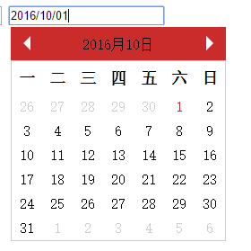 -
轮播插件
基于jQuery实现的轮播插件:包括渐进轮播、滚动轮播、全屏轮播、3D轮播
-
渐进轮播插件 源代码 Demo
1.自动轮播
2.具有自锁功能,避免用户多次点击
3.当用户点击前进、后退按钮有效的时候,按钮会反馈用户(按钮变大)
4.当用户手动触发轮播的时候,计时器会重新计时
-
滚动轮播插件 源代码 Demo
1.自动轮播
2.具有自锁功能,避免用户多次点击
3.当用户点击前进、后退按钮有效的时候,按钮会反馈用户(按钮变大)
4.当用户手动触发轮播的时候,计时器会重新计时
-
全屏轮播插件 源代码 Demo
1.自动轮播
2.具有自锁功能,避免用户多次点击
3.图片在开始并不会全部加载 会随着轮播播放自动加载
-
3D轮播插件 源代码 Demo
1.使用CSS3动画效果实现的3D轮播
2.可以自适应宽度
3.点击两翼的图片可以切换, 方便实用

-
-
自定义模态框 源代码 Demo
1.dialog内容可以自行定制
2.当点击确定、取消时可使用用户自定义事件
3.dialog 可以拖动
4.使用单例包装 确保只有页面一个dialog
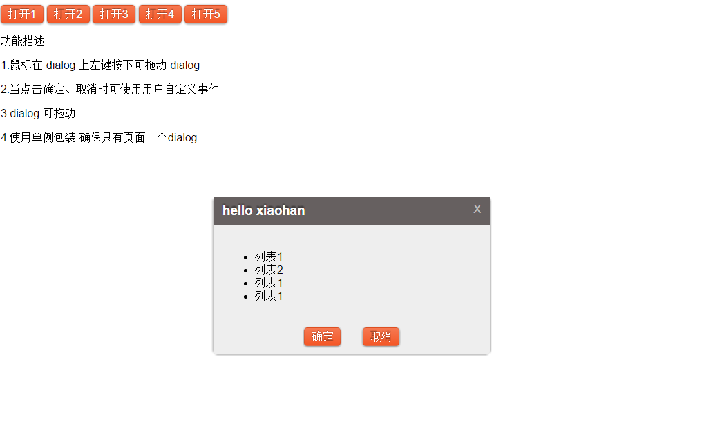 -
瀑布流布局 源代码 Demo
1.使用Deferred对象确保图片加载后重绘
2.加载图片使用逐帧动画实现
3.新闻列数根据屏幕大小自适应，最小为3列
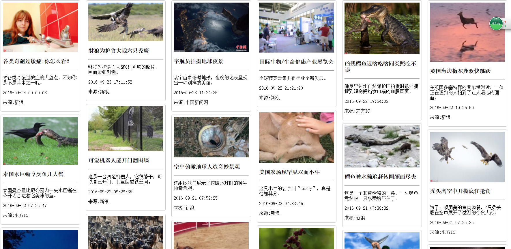 -
图片放大镜 源代码 Demo
1.基于 background-image 和 background-postion 实现图片放大效果
2.支持切换图片功能
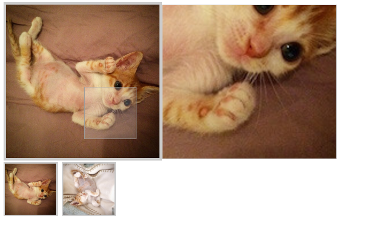 -
浮动导航栏 源代码 单导航栏-Demo 多导航栏-Demo
1.stickup 单个导航栏的浮动效果
2. multi-stickup 多个导航栏的浮动效果，相比单个导航栏加入了fixed范围 使得过渡更加平滑。
-
Vue.js Demo
自学Vue.js 后自制的几个Demo
-
可复用的模态框 源代码 Demo
1.使用slot挂载自定义内容
2.使用自定义指令实现模态框的拖拽功能
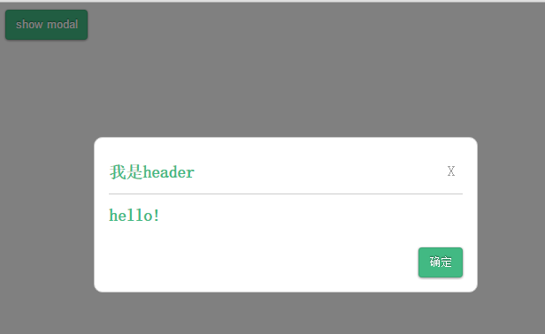 -
自定义饼图 源代码 Demo
1.使用了自定义组件
2.用户可以随时调节百分比
3.使用自定义指令 + SVG效果 实现调节百分比功能
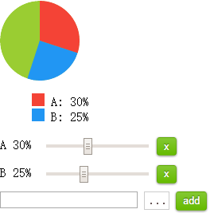 -
符合MVC规范的todoList 源代码 Demo
1.使用 Web Storage 存储数据 并与客户端实时同步
2.完全符合MVC规范 JavaScript 代码只有百行左右
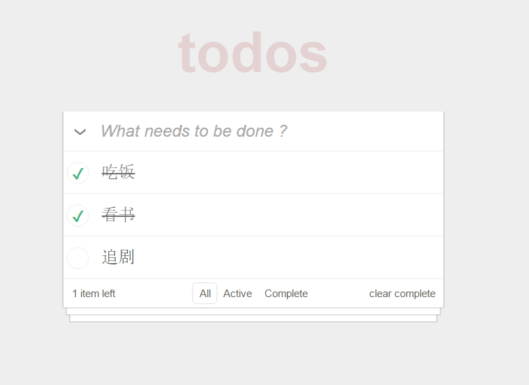 -
可复用的queryTable 源代码 Demo
1.通过修改input内的内容来实现表格内容的筛选
2.使用自定义的指令实现表格内容选中功能
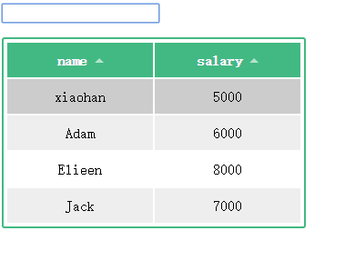 -
表单验证 源代码 Demo
1.使用Web Storage 作为数据存储，并与客户端实时同步
2.使用计算属性实时校验，并且在验证成功或者失败时触发 验证框CSS 过渡效果
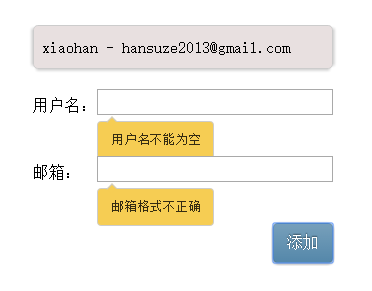 -
树状视图 源代码 Demo
递归使用组件实现树状展示
-
-
Angular2 Demo 源代码
在学习Angular2 时制作的Demo
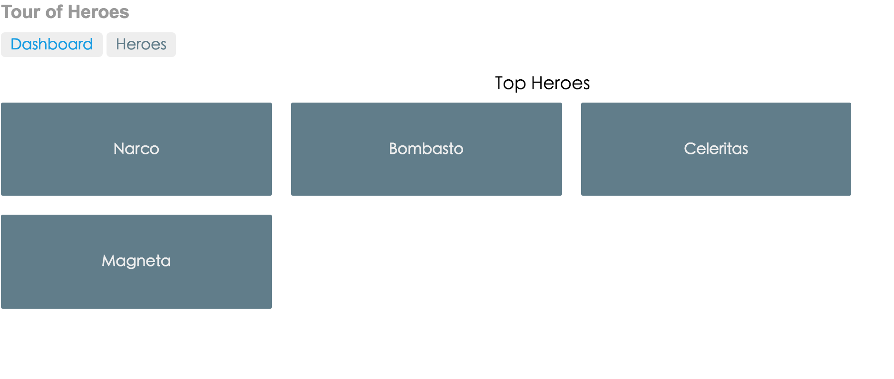
-
- Skill. 技能清单
Web前端
-
HTML / CSS
能够编写语义化的 HTML，模块化的 CSS，完成较复杂的布局
-
JavaScript
熟悉原生Javascript，能脱离jQuery等类库编码
能运用模块化、面向对象的方式编程
了解 RequireJS jQuery VueJS 的使用
-
其他
了解 Gulp 前端自动化工具
了解前端安全、性能优化方面的一些知识
其他
-
为人热心和善，是能够迅速融入群体的同事
工作严谨认真，不允许页面有1px的偏差
喜欢干净整洁的代码，具有良好的编码习惯
学习能力强，能够独立自主学习，具有一定的求知欲和上进心
掌握 Git 等开发工具的使用
能够熟练使用 Markdown 进行写作

韩苏泽的简历
"年轻 没有什么不可以"
-
- Contact. 联系方式
- 邮箱: hansuze2014@gmail.com
- 微信: 小韩
- QQ: 502253699
-
- Application. 应聘岗位
- 前端工程师
-
- Tech. 技能点
JavaScriptHTMLCSSVue.jsECMAScript 6Angular 2
我是一个充满活力、对前端由衷热爱、善于发现问题的前端工程师。
我目前正在寻找前端工程师岗位，希望借此机会为贵司献上我的一点绵薄之力，快招我到碗里来吧！